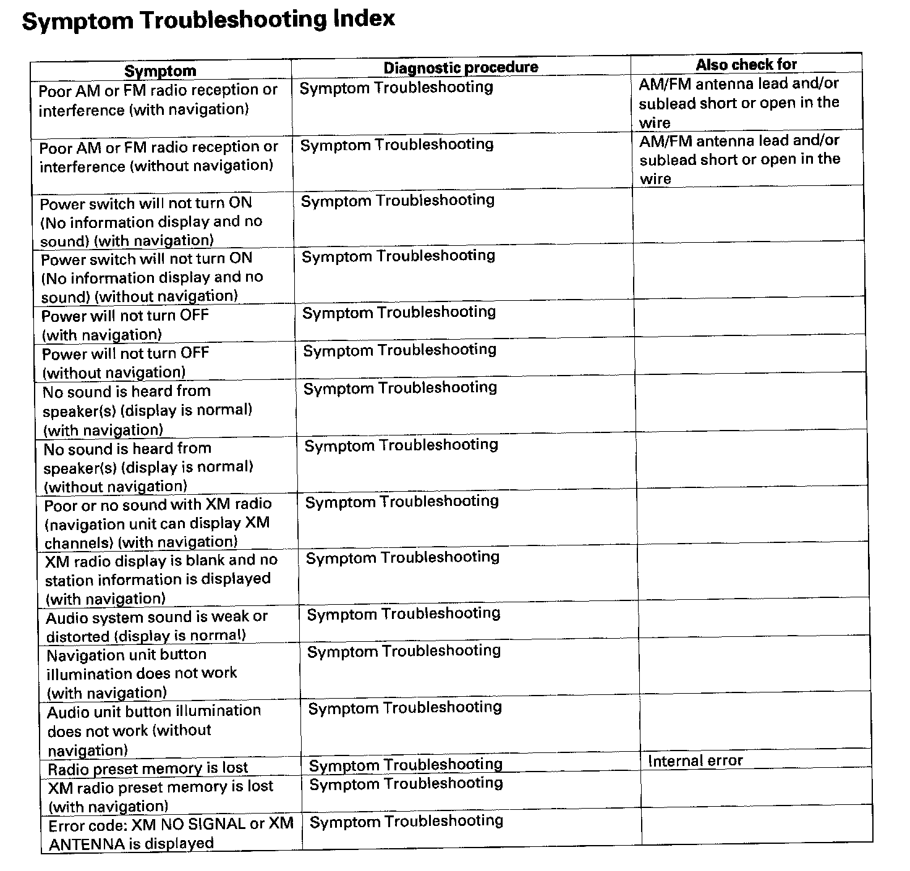
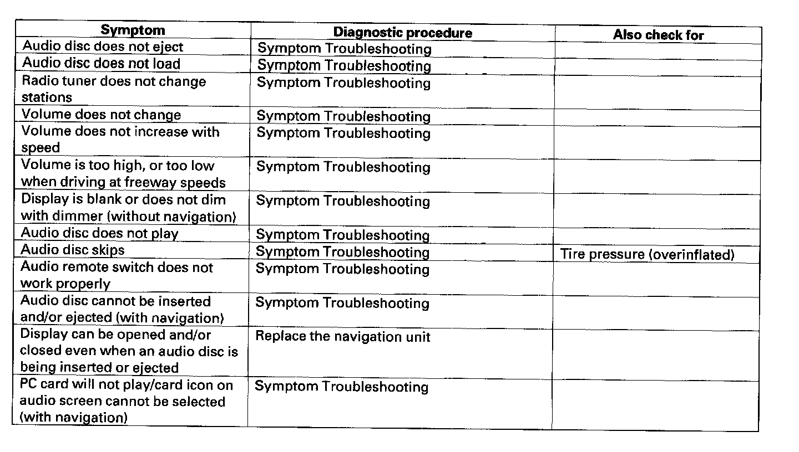

Operation CHARM
: Car repair manuals for everyone.
Home
>>
Honda
>>
2007
>>
Civic Si L4-2.0L
>>
Repair and Diagnosis
>>
Accessories and Optional Equipment
>>
Radio, Stereo, and Compact Disc
>>
Testing and Inspection
>>
Symptom Related Diagnostic Procedures
>>
Index, Symptom Troubleshooting
Index, Symptom Troubleshooting
Symptom Troubleshooting Index Part 1:

Symptom Troubleshooting Index Part 2:
